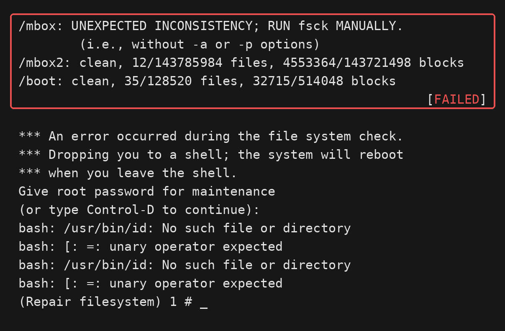
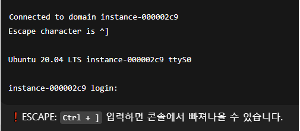
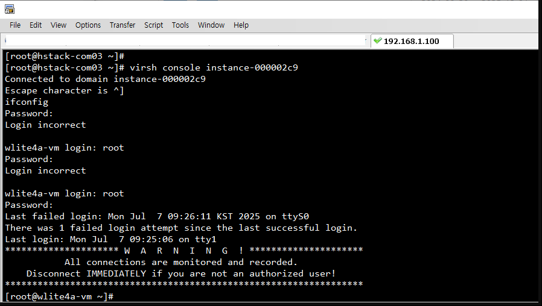

시스템 인프라 운영
Linux 장애 및 에러 처리
실제 운영 중 겪은 장애와 에러를 증상, 원인, 조치 순서로 정리한 기록입니다.
1. /etc 권한 오류 복구 (chmod 777 /etc)
증상
/etc 디렉터리에 chmod 777이 적용되어 시스템 파일 권한이 모두 바뀌었습니다.
조치
RPM 데이터베이스에 기록된 기본 권한으로 복구했습니다. 패키지 정보가 최신 상태일 때 복구할 수 있습니다.
# 권한이 바뀐 파일 확인 (권한 문제가 있으면 . 대신 M 표시)
rpm -Va --nofiledigest
# 설치된 모든 패키지의 파일 권한을 기본값으로 복구
rpm --setperms -a2. SSL 인증서 에러 (non-www 미지원)
증상
인증서를 www.test.com 또는 test.com 중 한 도메인으로만 발급하면, 다른 주소로 접속할 때 Safari 브라우저에서 [신뢰할 수 없는 인증서] 에러가 발생했습니다.
원인
인증서에 포함되지 않은 호스트 이름으로 접속하면 인증서 이름이 일치하지 않습니다.
조치
www가 붙은 도메인과 붙지 않은 도메인을 함께 넣어 인증서를 발급합니다.
certbot --apache -d test.com -d www.test.com3. 파일시스템 Read Only 장애
증상
특정 파일시스템(/mbox)이 Read Only로 바뀌었고, 재부팅하자 콘솔에서 파일시스템 검사가 실패하며 유지보수 셸로 진입했습니다.

조치
root 비밀번호로 로그인한 뒤 e2fsck로 복구를 시도했지만 블록 읽기 에러가 계속 발생했습니다.
e2fsck -vf /dev/sda2
# Error reading block 356816151 ... 반복 발생부팅을 먼저 살리기 위해 /etc/fstab에서 해당 파일시스템을 주석 처리하기로 했습니다. 이때 /도 Read Only로 마운트되어 있어, 읽기/쓰기로 다시 마운트한 뒤 수정했습니다.
# / 를 읽기/쓰기로 재마운트
mount -o remount,rw /
# /etc/fstab 에서 문제 파일시스템 주석 처리
vi /etc/fstab4. OpenStack VM 재부팅 (virsh)
개요
OpenStack 대시보드에서 VM을 제어할 수 없을 때, 컴퓨트 노드에서 virsh로 직접 VM 상태를 확인하고 재부팅했습니다.
VM 상태 확인
# 컴퓨트 노드의 전체 VM 상태 확인
[root@hstack-com03 ~]# virsh list --all
Id Name State
7 instance-0000011f running
10 instance-000001a9 running
29 instance-000002c9 running
- instance-00000041 shut off
- instance-000000ce shut off대상 VM 식별
# UUID 확인 (OpenStack 인스턴스 ID와 대조)
virsh domuuid instance-000002c9
20e398ec-f21b-4869-9b6a-70fecf546ae5
# 네트워크 인터페이스 MAC 확인
virsh domiflist instance-0000011f
Interface Type Source Model MAC
tape0a729d9-4a bridge qbre0a729d9-4a virtio fa:16:3e:b7:33:bb
tap50cf6054-ad bridge qbr50cf6054-ad virtio fa:16:3e:8c:86:fc재부팅 및 전원 제어
# 소프트 재부팅
virsh reboot instance-000002c9
# 강제 재부팅
virsh reset instance-000002c9
# 강제 종료
virsh destroy instance-000002c9
# 시작
virsh start instance-000002c9콘솔 접속
네트워크로 접속할 수 없을 때는 시리얼 콘솔로 VM에 직접 로그인합니다. 콘솔에서 빠져나올 때는 Ctrl + ]를 누릅니다.
# virsh console <도메인 이름 또는 ID>
virsh console instance-000002c9
